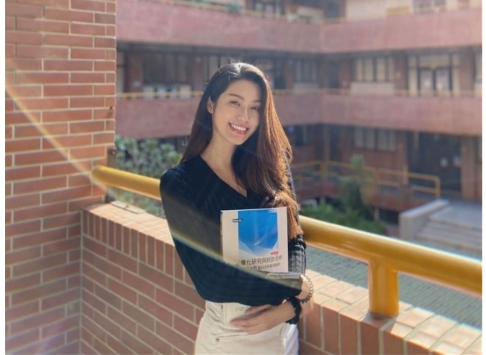
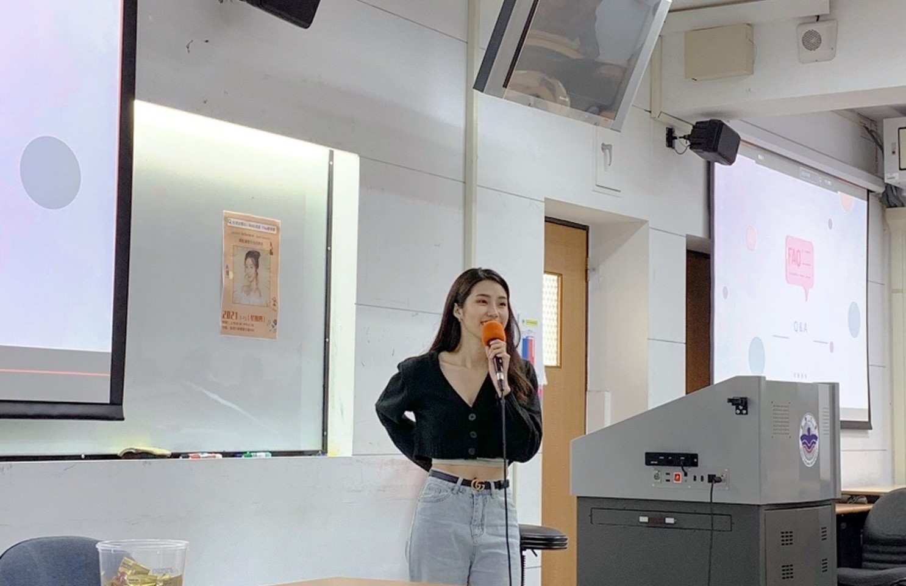
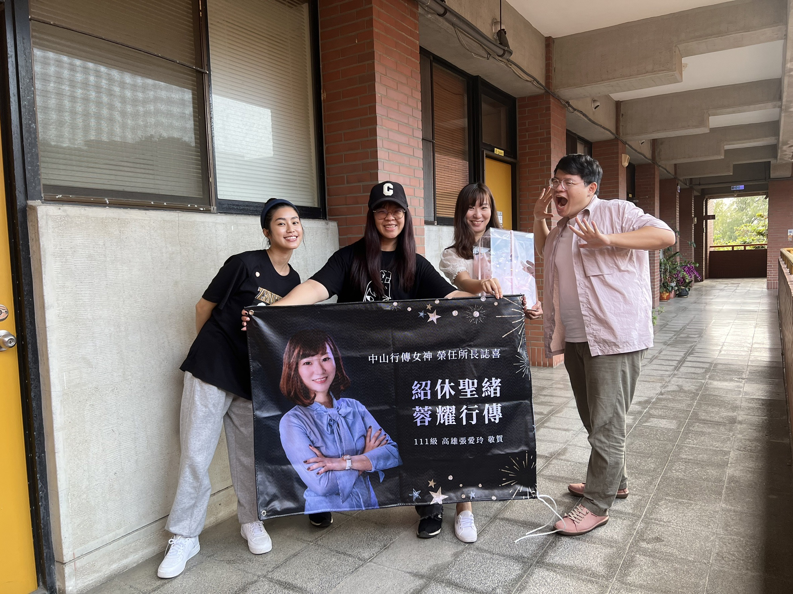
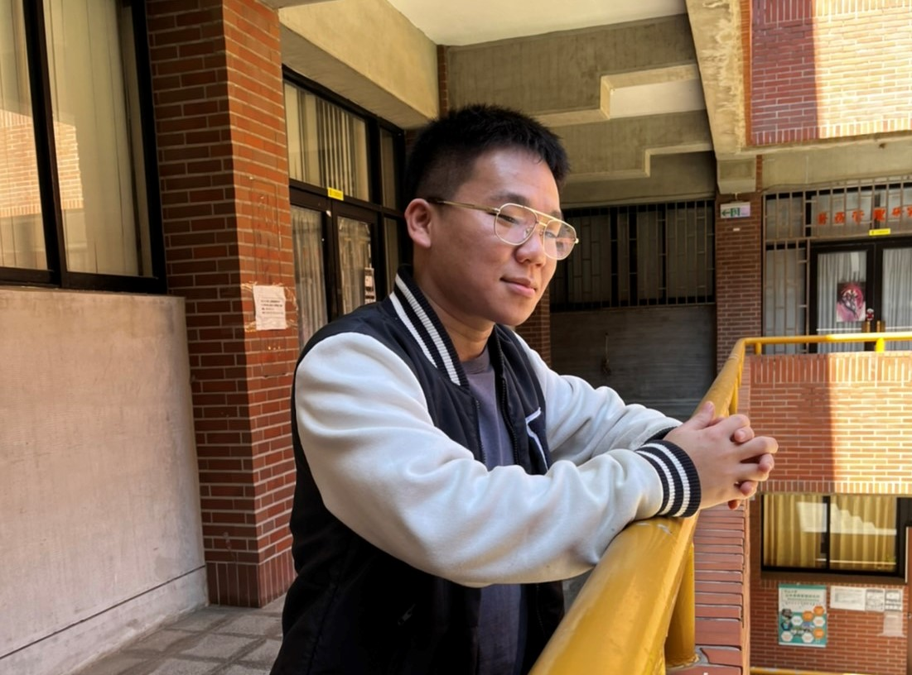
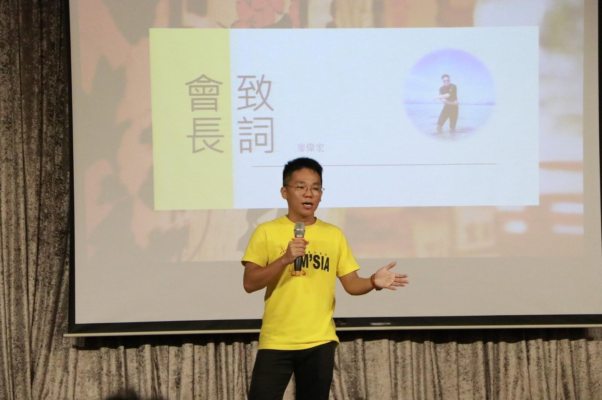
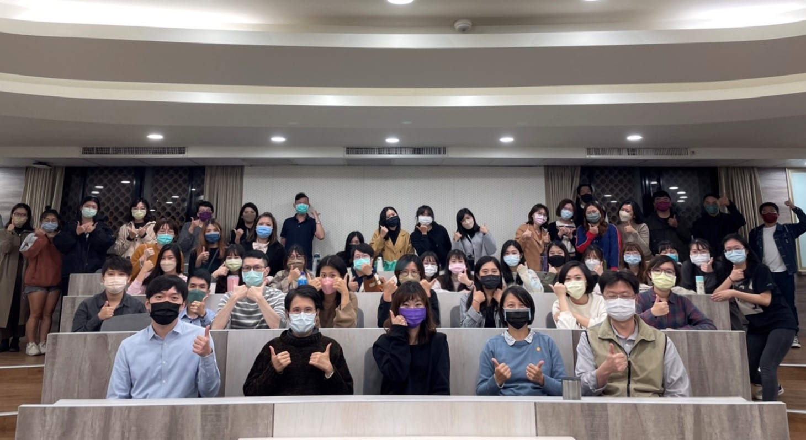
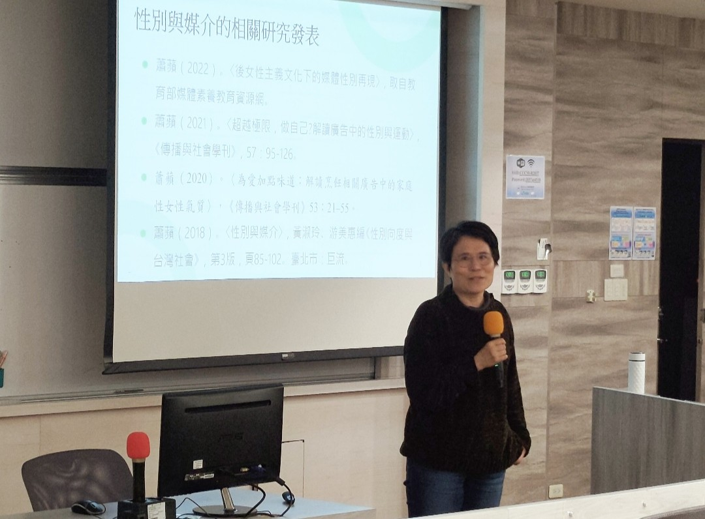
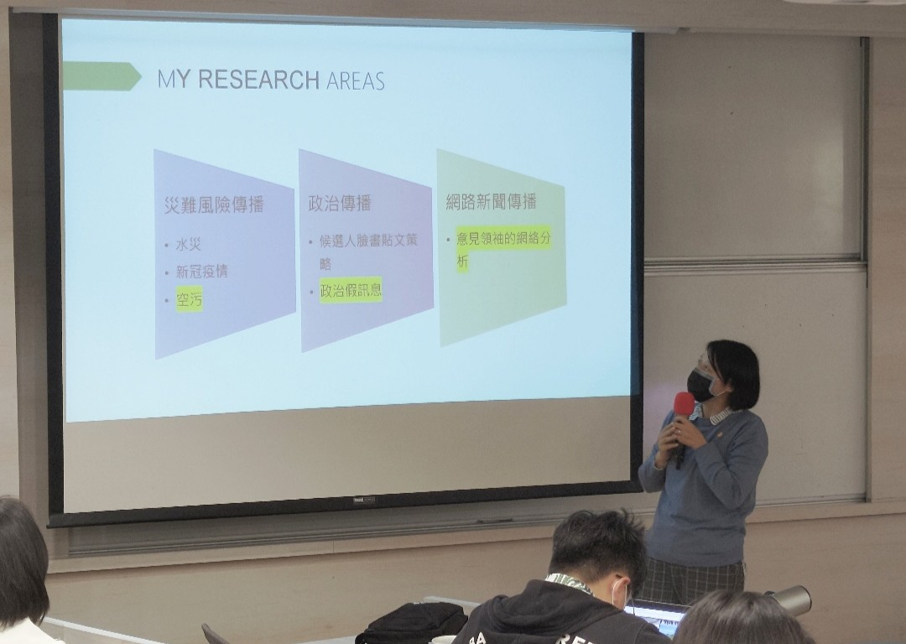
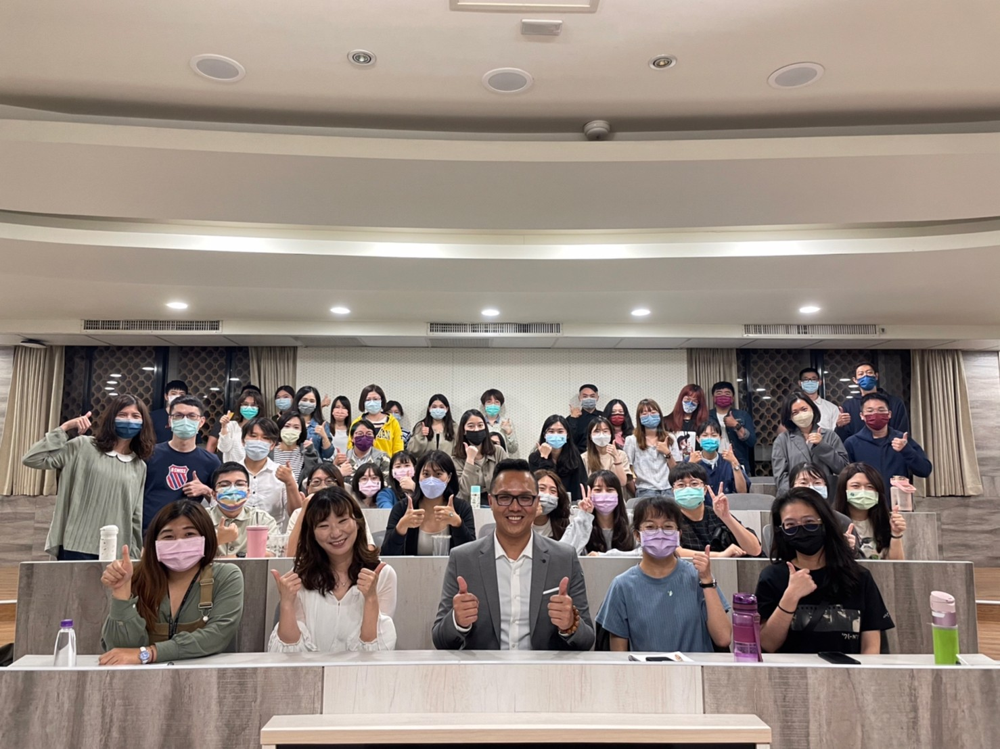
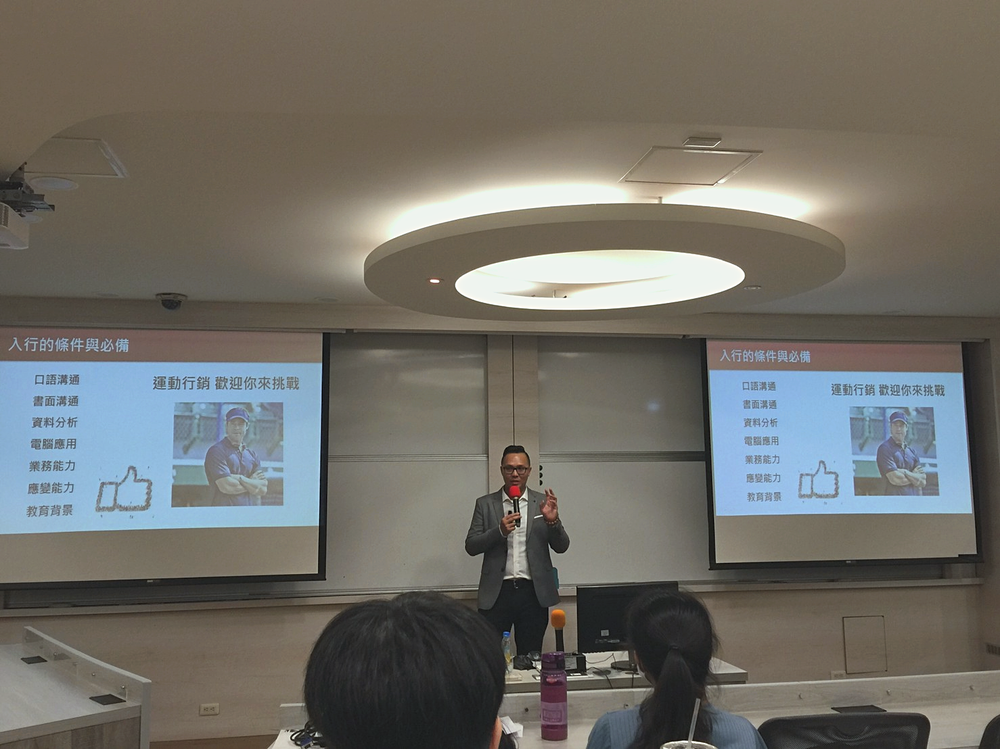

熱衷探索人生 追尋理想的自我
只要能妥善安排時間，其實你能做的事情比你想的還要多更多。本次行傳電子報封面人物邀請到劉亭蘭同學進行專訪，亭蘭勇於追尋自己的理想人生，她在研讀行傳所之餘，也努力開創自己的演藝事業，希望透過學業與實務上的實踐，締造出豐富的斜槓人生，於是本次電子報將透過亭蘭的分享來一探夢想實踐背後的成長點滴。

多方嘗試不侷限 定位自己的人生
大學時期的演藝試鏡，讓亭蘭愛上站在舞台展現自我的感覺。為了讓品牌看見她是具備流量的網路紅人，以爭取到更多的演藝機會，亭蘭積極的經營社群，藉此提高自身知名度。後天的努力加上與生俱來的「陽光」氣質，亭蘭獲得了許多知名品牌的廣告邀約，例如：李施德霖與Panasonic。而這些廣告拍攝也使的亭蘭對運鏡畫面的掌握，以及表情和肢體動作的展現更為熟練，並決心朝演員這條路努力。
經營粉專小撇步 粉絲人數大升級
Instagram擁有破萬粉絲的亭蘭，對粉專的經營頗有心得，憑藉著自身對Instagram的長期觀察，她發現通過購買廣告的方式來增加粉絲數會降低帳號的自然流量，造成帳號後續需要持續支出廣告費才能維持流量的問題，且通過購買廣告所帶來的粉絲，也可能不是帳號的主要受眾。因此，亭蘭認為帳號若是要提升追蹤數，可以善用軟體中的＃hashtag標記功能來增加貼文的曝光度，進而吸引對貼文感興趣者按下帳號追蹤鍵。除了經營Instagram，亭蘭近期也積極經營影音社群軟體Tik Tok來接觸不同平台的社群媒體用戶，希望能透過多種社群管道來聚集粉絲，進行大規模引流提升Instagram粉絲數。

重返校園學習 驗證學術與業界的應用
經歷過業界洗禮的亭蘭，為強化自身在行銷領域的專業知識，選擇進入行銷傳播管理研究所就讀。她鼓勵同學們多與業界接觸，以驗證理論於行銷企劃上的實務應用。除此之外，亭蘭也向讀者們推薦三堂她曾修習過的行傳所課程，分別為電腦中介傳播、品牌行銷與廣告創意，她認為這些課程富有實務價值且與業界貼近，能幫助同學對職場有進一步認識。


【人物專訪】
熱愛表演與互動交流 進入行傳所找回真實自我
高中畢業後即帶著家人的期望，大學選擇電機系就讀的廖偉宏，是行傳所的跨領域學生。偉宏對傳播領域的濃厚興趣，從高中時期參與戲劇社後就一直持續著，所以在大學四年的探索後，他決定遵循內心的聲音，在這個還有點陌生的領域中追求自己熱愛的事。

風趣口才吸引目光 臨場應變留下深刻印象
偉宏在大學時曾擔任過馬來西亞同學會會長，主持過大大小小的僑生交流活動，而他幽默逗趣的口才也經常在研究所的課堂報告、活動表演時，逗得全場哄堂大笑。偉宏表示，他從小就經常關注電視節目裡藝人的應對進退，其中特別欣賞藝人吳宗憲隨機應變的表現，並將他當作精進自己口條的目標。偉宏也說到，言語表達能力無論在研究所或是職場上都非常實用，因此若能加強口條、增進說服他人的能力，即便面對學經歷比自己更加優秀的人，也有機會在他人心中留下深刻的印象。

磨練舞台經驗 培養穩健台風
即使大學選擇的專業與自己的表演興趣不相符，偉宏仍把握每次上台演出的機會。他從大學開始就經常利用課餘時間出演劇場藝術學系的學期成果發表，甚至在碩一上學期，於劇藝系作品《鴛鴦配》中飾演男主角農場主人范基德，嘗試透過舞台訴說戲劇角色的人生故事，同時享受鎂光燈下發光發熱的炫目時光。這些舞台劇經驗的積累，也使偉宏培養出穩健的台風與隨機應變的口才，以及面對人群也不怯場的能力。
創造跨領域人才優勢 一腳踩進新媒體產業
無論是大學於理工領域的學習，或者令人眼睛為之一亮的口才與舞台經驗，擁有兩種不同類型經歷的偉宏，讓人不禁好奇他未來的生涯規劃。偉宏表示，電機系結合行傳所的跨領域經驗，確實讓他在未來與他人競爭科技產業公關或業務職缺時更具優勢，但他更希望能從事新媒體產業，與眾人一同腦力激盪，發想妙趣橫生的文案或腳本。偉宏也透露自己的下一步計畫是打算從餐酒館開放民眾報名的脫口秀開始嘗試，作為他首次面對校外觀眾表演的第一步。

【行傳活動】
教授最新研究報你知 指引未來研究方向
行銷傳播管理研究所於2月18日舉辦「教師研究成果分享會」，本次活動由王紹蓉所長主持，蕭蘋教授、譚躍教授以及李雅靖教授輪流向大家分享研究成果。藉由學術分享，同學們能與教授們互相交流想法，挖掘出自身研究所能聚焦的方向。而在分享結束後，所有與會教授們也公布各自招收指導學生的標準，期待能尋找到研究興趣相投的同學。

關注性別與新媒體 赴日進行研究交流
第一位上台分享的是蕭蘋教授，她簡介了自己近三年來陸續發表過的後女性主義、閱聽人解讀等方面的研究，以及目前手邊正在進行的各項研究計畫，如即將收尾的科技部計畫，即是運用她過去在性別議題、文化研究等相關領域的研究經驗，從當代消費文化、性別政治之結構和日常生活之實踐等面向，探討手機的社會文化意義。接下來，蕭蘋教授也準備與過去在日本明治大學擔任訪問學者期間，所結識的田中洋美教授和高馬京子教授合作，攜手進行與新媒體相關的研究計畫，期待能對新傳播科技形塑的社會現況與文化觀點產生新的洞察。

觀察新聞與社群之互動 檢視媒體影響力
接著上場的譚躍教授分享了自身所鑽研的研究主題，包含災難風險傳播、政治傳播與網路新聞傳播。譚躍教授的研究主要是透過內容分析法去觀察空汙風險的媒體建構，檢視新聞媒體與社群媒體之間的互動，同時她也分析新聞媒體對民眾的風險感知與回應風險的行為所帶來的影響。而她近期較感興趣的主題是通過網路意見領袖的網絡分布來觀察閱聽人的特定喜好如何形成同溫層，以及台灣民眾對於媒體使用的選擇與其影響。另外，譚躍教授也表示，她今年會展開台灣傳播調查資料庫的題項設計，期望該題項的設計能為調查假訊息傳播的相關研究作出貢獻。

創造行銷可能性的人工智慧 提供消費者全新體驗
剛從美國進修歸來的李雅靖教授分享了她近期所觀察到的人工智慧應用於行銷領域成果，她表示人工智慧所展現的樣貌與功能越來越多元，比如在人工智慧上加入人類的特徵：五官、情感、動機意圖等，希望透過擬人化的效果與消費者產生連結，為品牌塑造創造更多可能性。雅靖教授也分享了進修期間與國外學者合作研討的人工智慧能動力與社會力之影響，她表示從個體權利義務與社交行為的角度，觀察消費者如何知覺人工智慧成長的特性，能給企業作為規劃品牌識別的重要參考，以及大眾面臨人工智慧步入社會的反思。
【行傳講座】
掌握運動行銷新手法 引領品牌走進體壇賽事
品牌是否能透過贊助運動賽事帶領大眾用不同視角認識品牌？進而提升品牌形象，使企業願意在體壇挹注資金，為運動界帶來更好的發展。中山大學行銷傳播管理研究所於3月5日邀請智林運動行銷的郭志緯總監，分享如何透過賽事與運動員來行銷品牌，打造品牌話題，突破以往的看板廣告運動行銷框架。

突破既有運動行銷框架 吸引企業贊助賽事
郭總監首先提及台灣企業贊助運動意願較低，運動行銷不如歐美國家盛行的原因，在於台灣賽場觀眾相較歐美國家少，所以他認為台灣的運動行銷手法不能僅侷限於賽場看板的單次性曝光，而是要將品牌與運動員結合，藉由運動員影響力與品牌互動強化品牌特質，並透過時下熱門的事件議題增加大眾對品牌之印象，例如：新光三越周年慶搭上世大運風潮，邀請標槍金牌選手鄭兆村擔任代言人，以其「快、狠、準」的意象凸顯周年慶的即時特惠感。是以運動行銷重點在讓品牌與賽事共創吸引力，也唯有當企業發現賽事的高話題性有益品牌曝光，企業才會願意贊助賽事。

結合品牌與運動價值 尋找品牌切入點
企業贊助賽事的原因有二：提升品牌知名度與展現位階象徵，因此能打動企業贊助的關鍵在於該賽事具備主流性、高話題性，以及能創造行銷活動帶來商業價值。郭總監強調運動行銷必須依循這三大重點「人潮、話題、獨特內容」來替品牌找尋適合的賽事投入行銷策略，例如，台灣棒球賽有固定觀眾以及高收視率，能創造可觀收入，所以郭總監向新光集團分析棒球賽事優點，成功吸引其贊助樂天桃猿棒球隊。此外，棒球賽事能創造話題性人物，吸引品牌透過人物性格凸顯品牌形象，如棒球選手陳金鋒逆轉局面形象與藥商台灣武田推出的胃藥標語「7天胃你逆轉人生」相符，因而成為武田製藥的胃藥代言人。可見在多元的運動行銷中，切合品牌形象的行銷策略能為雙方都帶來高效益。
掌握品牌行銷需求 協助品牌大放異彩
「站在客戶角度，掌握客戶需求」是郭總監行銷操作心法，2015年SKODA汽車進入台灣市場，他們希望能帶動年輕客群，於是智林運動行銷讓SKODA與台灣職棒的樂天桃猿隊合作，在其主場外野設置16米超大全壘打牆看板，並在看臺擺設新款汽車，推出球員的全壘打球只要擊中汽車便能獲得汽車的活動，以吸引媒體報導，將品牌推廣到賽事外的領域，遂善用賽事行銷凸顯品牌，能幫助品牌獲得具話題性的關注。

「致力擔綱企業與體育的橋樑」是郭總監從事運動行銷的宗旨，他希望結合品牌與運動員創造高話題性活動，讓企業贊助運動，提升台灣賽事可看性，所以郭總監期許台灣體壇能鬆綁品牌在賽事的行銷活動限制，例如：開放品牌在棒球服上印置廣告，行銷若能多元化，賽事自然容易吸引企業投入資金贊助，相信運動賽事與合作品牌在郭總監的運動行銷策略活化下，雙方銷售業績都能大幅提升。
行銷傳播講座預告
講者／服務單位
講座講題
講座日期
待定
待定
待定
==本刊完==
感謝您閱讀本期電子報，您的支持是我們進步的動力
若有任何建議與鼓勵，請於上方惠賜您的寶貴意見，謝謝！
若有任何建議與鼓勵，請於上方惠賜您的寶貴意見，謝謝！